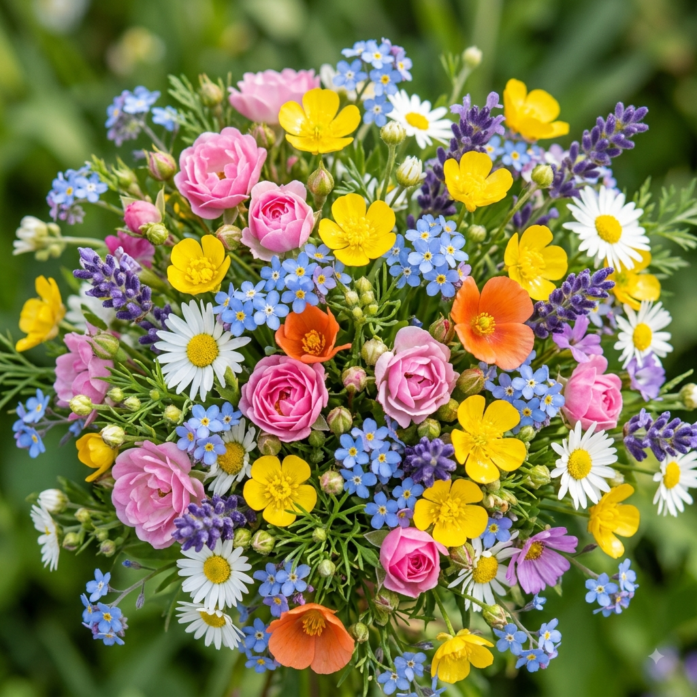

Apresentação
Você sabe qual é a sua flor favorita? Algumas representam amor, outras amizade, esperança ou renovação. Neste espaço, vamos descobrir juntos os significados e encantos escondidos em cada pétala.
Explore um mundo cheio de cores, aromas e beleza, conheça diferentes espécies e descubra o encanto que existe em cada flor
Por: Heloisa Sene

Você sabe qual é a sua flor favorita? Algumas representam amor, outras amizade, esperança ou renovação. Neste espaço, vamos descobrir juntos os significados e encantos escondidos em cada pétala.
Cada espécie possui necessidades únicas de iluminação e rega. Enquanto os girassóis amam luz direta durante o dia todo, outras plantas preferem a luz indireta para proteger suas pétalas delicadas. Fique atento às folhas para entender o que sua planta precisa!